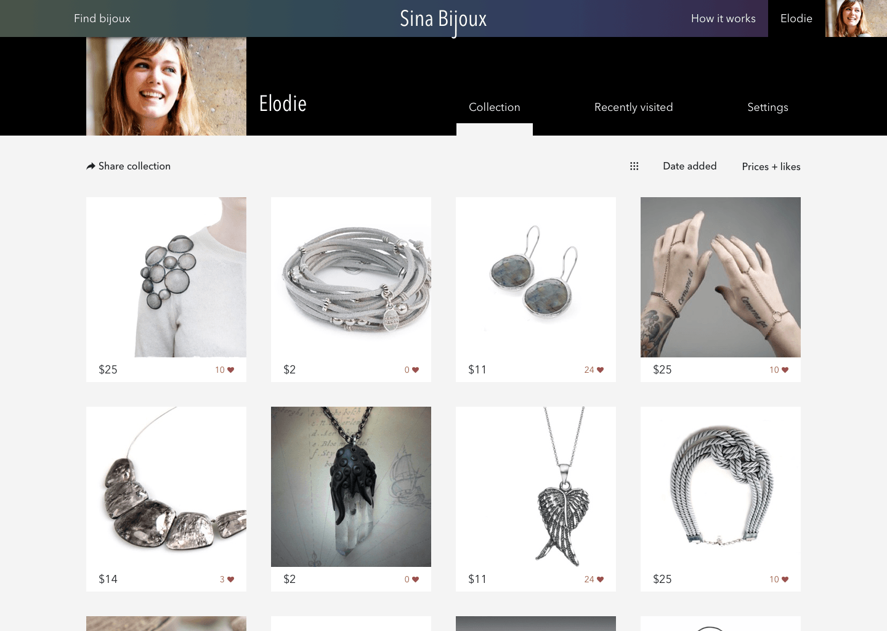

Sina Bijoux
Interaction design
Designing ideas for Sina Bijoux - smart jewelry search among eBay and AliExpress.
Online shopping nightmare
There are a lot of nice and cheap stuff from Asia and South East Asia online. But search among them is a nightmare. Skip to the next paragraph, if you know what I’m about.
First, because of poor localizations. I collect screenshots of amazing translations to Russian, such as notification ‘You should login before screaming, new user, registration shrimp account’.
Second, because of that specific understanding of both marketing and search engines sellers have. An item usually has all possible related words in it’s title, photos may belong to some brand (in case of a replica), description starts with photos of other seller’s items. Categories (which can be not that comfortable on the platform itself) can be ignored or even wrong.
What is Sina
Sina is a search engine by Alexander Medvedev that uses APIs of eBay and AliExpress platforms and applies image recognition to the search results. For now the only type of items is bijouterie.
Sina Bijoux doesn’t sell things. I just helps to find bijoux and redirects to the original listing.
Little search UI bijoux
I collected some wishes and pain points about online shopping in case of wide choice in general and jewelry-specific.
Based on them Sina can:
- Sort items by body parts they supposed to be putted on - instead of complicated categories. What is the name for a ring connected to a bracelet? No idea. But you definitely wear it on your wrist and finger.
- Hide prices, if you like people to pick gifts for themselves.
- Hide fine jewelry - or more pointedly - everything pretending to be fine jewelry. You never can be sure until you have the actual item in your hands. It’s the default, you can turn “fine jewelry” on.
- Keep same items in front of you when you change filters (instead of getting you back to top) - if possible.
- Remember search parameters from your previous search.
Screens
There are trends. Like owls. Or music notation symbols. Or some TV-shows. We can parse them, make picks and feature on homepage:
Sina collects popular searches, but if you weren't lucky you may need to wait a while. Search, filters and loading:
You need to sign up only if you want to like items and so create your collection. Collection can be shared. Besides login details a user can set name and photo. Gender and 'deliver to' will be remembered from the last search.
